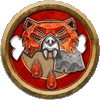

野蛮人
Barbarian
战斗时，你沉浸于狂暴之中。你喜好大肆破坏，用强力武器把敌人碎尸万段，你不需要复杂的技术或严格训练，惊人的耐力就是你的资本。你凭借凶残的本能激起愤怒，它可能将你与一种动物、精魂、或你自身的某一部分联系起来。对于许多野蛮人来说，蛮力是一把锤子，而每个问题看起来都像是钉子。还有的野蛮人则试图控制他们的激烈情绪，只有在最重要的时候才将其释放出来。
关键属性 Key Ability
力量
在1级时，你的职业给你在力量上的一次属性提升
生命值 Hit Points
12 + 你体质调整值
你在1级和之后的每个等级，将你的最大生命值增加这个数值
- 初始熟练 Initial Proficiencies
- 1级时，你在下面这些数据上获得所列的熟练等级。你在任何未列出的项目上都是未受训，除非你通过其他方式获得了更高的熟练等级。
- 察觉 Perception
- 察觉-专家
- 豁免骰 Saving Throws
- 强韧-专家，反射-受训，意志-专家
- 技能 Skills
- 运动-受训，在数量等于3 + 你智力调整值的额外技能上受训
- 攻击 Attacks
- 简易武器-受训，军用武器-受训，无武装攻击-受训
- 防御 Defenses
- 轻甲-受训，中甲-受训，无甲防御-受训
- 职业DC Class DC
- 野蛮人职业DC-受训
在战斗遭遇中…… During Combat Encounters...
你唤起怒意，冲锋在前，扫平一切挡路的障碍。攻击是你最好的防御——你需要在敌人突破你相对薄弱的防御前，就先撂倒他们。
在社交遭遇中…… During Social Encounters...
你借助威吓来实现目的，尤其是在更温和的劝说方式不管用的时候。
在探索中…… While Exploring...
你时刻戒备着危险，准备好在战斗爆发时第一时间冲锋陷阵。你爬上难以逾越的石墙，放下绳索让其他人跟上，你涉入危机四伏的水流，以触动藏在水下的开关。如果有什么东西需要蛮力破坏，就包在你身上！
在休整期内…… In Downtime...
你也许会去酒馆痛饮，宣扬有关你壮举的惊人传说，或是招募追随者，靠自己的力量成为一名统帅。
你可能…… You Might...
- 怀有根深蒂固的愤怒、仇恨或挫败感。
- 比起需要耐心和繁琐步骤的方法，更喜欢直截了当。
- 遵守刻苦的锻炼身体计划，并且揍那些说这与你讨厌耐心和麻烦的性格不符的人。
其他人也许…… Others Probably...
- 依赖你的勇气和力量，并且认定你能在战斗中做出应有贡献。
- 把你当做未开化的或没教养的傻大个，不适合上流社会。
- 相信你对伙伴和盟友的忠诚，在战斗中永不示弱。